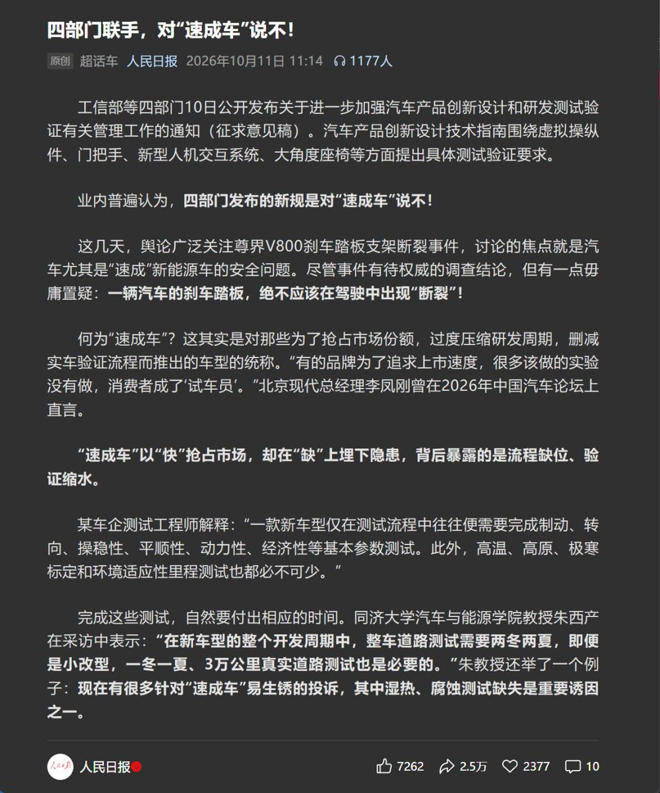

小虚空🍥
@tokerumaisurii
@realNyarime 再见了人小弟😭不要这样说啊人小弟你会死的😭最后一篇😭你的报道很喜欢你的评论记得关😭

奶昔🥤
@realNyarime
人民日报发文：对“速成车”说不！一辆汽车的刹车踏板，绝不应该在驾驶中出现“断裂”！
https://t.co/0wqwdxzdU4
此前，懂车帝 100-0 km/h 刹车实测中，3 台尊界 V800 的刹车踏板支架全部被踩断，断裂时受力约为 1612 N。
网传测试画面显示，同为华为系的智界 V9 https://t.co/NGAWf5Z0WU